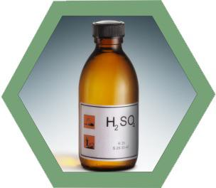

Техническая серная кислота (H₂SO₄) — одно из важнейших соединений в химической промышленности, используемое в производстве удобрений, обработке металлов и очистке нефтепродуктов.
| Parameter name | Rate | ||
|---|---|---|---|
| Contact | |||
| Enhanced | Industrial | ||
| 1st grade | 2d grade | ||
| 1. Appearance | Not rated | ||
| 2. Mass fraction of monohydrate (H2SO4), %, min | 92,5-94,0 | Not less than 92,5 | |
| 3. Mass fraction of iron (Fe), %, max | 0,006 | 0,02 | 0,1 |
| 4. Mass fraction of residue on ignition, %, max | 0,02 | 0,05 | Not rated |
| 5. Mass fraction of nitrogen oxides (in terms of N2O3), %, max | 0,00005 | Not rated | |
| 6. Mass fraction of nitro-compounds, %, max | Not rated | ||
| 7. Mass fraction of arsenic (As), %, max | 0,00008 | Not rated | |